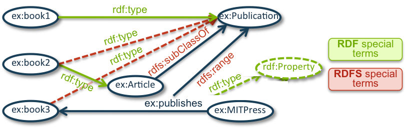
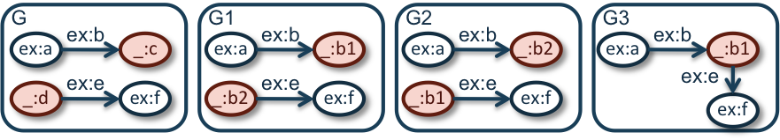

SPARQL is a query language and a protocol for data that is stored natively as RDF or viewed as RDF via middleware. The main mechanism for computing query results in SPARQL is subgraph
matching: RDF triples in both the queried RDF data and the query pattern are interpreted as nodes and edges of directed graphs, and the resulting query graph is matched to the data graph using
variables as wild cards. Various W3C standards, including RDF 1.2 Concepts and Abstract Syntax [RDF12-CONCEPTS] and OWL 2 Web Ontology Language Mapping to RDF Graphs (Second Edition) [OWL2-MAPPING-TO-RDF], provide semantic
interpretations for RDF graphs that allow additional RDF statements to be inferred from explicitly given assertions. Many applications that rely on these semantics require a query language such
as SPARQL, but in order to use SPARQL, basic graph pattern matching has to be defined using semantic entailment relations instead of explicitly given graph structures. There are different
possible ways of defining a basic graph pattern matching extension for an entailment relation. This document specifies one such way for a range of standard semantic web entailment relations. Such
extensions of the SPARQL semantics are called entailment regimes within this document. An entailment regime defines not only which entailment relation is used, but also which queries and
graphs are well-formed for the regime, how the entailment is used (since there are potentially different meaningful ways to use the same entailment relation), and what kinds of errors can arise.
The entailment relations used in this document are standard entailment relations in the semantic web: RDF entailment, RDFS entailment, D-entailment, OWL Direct and RDF-Based Semantics entailment,
and RIF Core entailment.
Status of This Document
This section describes the status of this
document at the time of its publication. A list of current W3C
publications and the latest revision of this technical report can be found
in the W3C technical reports index at
https://www.w3.org/TR/.
This specification is published by the
RDF Star Working Group as part of the
update of specifications for format and errata.
Publication as a First Public Working Draft does not
imply endorsement by W3C and its Members.
This is a draft document and may be updated, replaced or obsoleted by other
documents at any time. It is inappropriate to cite this document as other
than work in progress.
This document was produced by a group
operating under the
W3C Patent
Policy.
W3C maintains a
public list of any patent disclosures
made in connection with the deliverables of
the group; that page also includes
instructions for disclosing a patent. An individual who has actual
knowledge of a patent which the individual believes contains
Essential Claim(s)
must disclose the information in accordance with
section 6 of the W3C Patent Policy.
The SPARQL 1.2 Query Language [SPARQL12-QUERY] defines the evaluation of a basic graph pattern by means of subgraph matching. This form of basic graph pattern
evaluation is also called simple entailment since it can equally be defined in terms of the simple entailment relation between RDF graphs. In
order to use more elaborate entailment relations, which also allow for retrieving solutions that implicitly follow from the queried graph, this document defines several entailment
regimes. An entailment regime specifies how an entailment relation such as RDF Schema entailment can be used to redefine the evaluation of basic graph patterns from a SPARQL query making
use of SPARQL's extension point for basic graph pattern matching. In order to satisfy the conditions that SPARQL places on extensions to basic graph pattern matching, an entailment regime
specifies conditions that limit the number of entailments that contribute solutions for a basic graph pattern. For example, only a finite number of the infinitely many axiomatic triples can
contribute solutions under the RDF Schema entailment regime. The entailment relations used in this document are common semantic web entailment relations:
RDF entailment,
RDF Schema entailment,
D-Entailment,
OWL 2 RDF-Based Semantics entailment,
OWL 2 Direct Semantics entailment, and
RIF-Simple entailment.
References to RDF or RDFS entailment rules from the RDF 1.2 Semantics specification are used in Section
1.2, 3.1, 3.2, and 4.1 in an informative way and implementations are not expected to
implement these rules as they are used here.
1.1 Document Conventions
Throughout the document, certain conventions are used, which are outlined below.
1.1.1 Graph Syntax
This document uses the Turtle [RDF12-TURTLE] data format to show triples explicitly. This notation uses a node identifier (nodeID) convention to indicate blank nodes in
the triples of a graph. While node identifiers such as _:xxx serve to identify blank nodes in the surface syntax, these expressions are not considered to be the label of the
graph node they identify; they are not names, and do not occur in the actual graph. In particular, the RDF graphs described by two Turtle documents which differ only by renaming their blank
node identifiers will be understood to be equivalent. This renaming convention should be understood as applying only to whole documents, since renaming the node identifiers in part of a
document may result in a document describing a different RDF graph. A blank node may also anonymously (without an explicit identifier) be denoted with [].
IRIs are written enclosed in < and > and may be absolute RDF IRI References or relative to the current base IRI. IRIs may also be abbreviated by using
Turtle's @prefix directive that allows declaring a short prefix name for a long prefix of repeated IRIs. Once a prefix such as @prefix foo: <http://example.org/ns#>
. is defined, any mention of an IRI later in the document may use a qualified name that starts foo: to stand for the longer IRI. For example, the qualified name
foo:bar is a shorthand for the IRI <http://example.org/ns#bar>.
For example, the following triples use prefixes and abbreviated IRIs and also the non-abbreviated IRI <book2>, which is relative to the base IRI of the document.
Standard Turtle abbreviations are taken to be expanded into their full form in the queried graph and the query. Since the entailment regimes
use the vocabulary of the queried graph to constrain the solutions, this means that, e.g., when a is used in a predicate position it is considered to be expanded to
rdf:type before the query is answered. Similarly, abbreviations for lists etc. in the queried graph are considered to be expanded into their full form. For example, if a Turtle
document contains a list of the form ( ex:a ex:b ), it is assumed that vocabulary of the queried graph contains rdf:first, rdf:rest, and
rdf:nil because the expanded form of the list is [ rdf:first ex:a; rdf:rest [ rdf:first ex:b; rdf:rest rdf:nil ] ].
1.1.2 Namespaces
Examples assume the following namespace prefix bindings unless otherwise stated:
Prefix
IRI
rdf:
<http://www.w3.org/1999/02/22-rdf-syntax-ns#>
rdfs:
<http://www.w3.org/2000/01/rdf-schema#>
owl:
<http://www.w3.org/2002/07/owl#>
xsd:
<http://www.w3.org/2001/XMLSchema#>
rif:
<www.w3.org/2007/rif#>
In the interests of brevity, the prefix ex: is also used in the examples. The prefix is assumed to be bound to an exemplary IRI such as
<http://www.example.org/>.
1.1.3 Preliminary Definitions
This document uses the same definitions as the
SPARQL 1.2 Query Language specification. Important terms are recaptured below for clarity. In the case of any differences, the SPARQL Query Language definitions are the normative ones.
The term I denotes the set of all IRIs, RDF-L the set of all RDF Literals,
and RDF-B the set of all blank nodes in RDF graphs.
The set of RDF Terms, RDF-T, is I ∪ RDF-L ∪ RDF-B.
The set of query variables is denoted as V and V is assumed to be countable, infinite, and disjoint from RDF-T. A triple pattern is a member of the set:
(RDF-T ∪ V) x (I ∪ V) x (RDF-T ∪ V),
A basic graph pattern (BGP) is a set of triple patterns.
A pattern instance mapping P is the combination of an RDF instance mapping σ and solution mapping μ. For a BGP x, P(x) denotes the result of
replacing blank nodes b in x for which σ is defined with σ(b) and all variables v in x for which μ is defined with
μ(v), denoted P(x) = μ(σ(x)).
1.1.4 Result Descriptions
Result sets are illustrated in tabular form.
x
y
z
"Alice"
<http://example/a>
A 'binding' is a pair (variable, RDF term). In this
result set, there are three variables: x, y, and z (shown as column headers). Each solution is shown as one row in the body of the table. Here, there
is a single solution, in which variable x is bound to "Alice", variable y is bound to <http://example/a>, and variable
z is not bound to an RDF term. Variables are not required to be bound in a solution.
Sometimes solutions are annotated with the name of a solution mapping so that the explanatory text can refer to the solution mapping and explain or justify certain solutions. For
example, in the results table below, the only solution is given by the solution mapping μ1:
x
y
z
μ1
"Alice"
<http://example/a>
1.2 Effects of Different Entailment Regimes
The SPARQL Query specification already envisages that SPARQL can be used with entailment regimes other than simple entailment. To illustrate the differences between simple, RDF, and RDFS
entailment, consider the following data:
 Figure 1: A graphical representation of the RDF graph for the example where green dashed lines indicate RDF-entailed triples and red dashed lines indicate triples that are
also RDFS-entailed.
Consider, for example, the following query:
SELECT ?prop WHERE { ?prop rdf:type rdf:Property }
Under simple entailment the query has an empty answer when querying the above graph. Under RDF entailment, the
RDF rule rdfD1 be used on (5) to derive the triple ex:publishes rdf:type rdf:Property which means that
ex:publishes is a valid binding for ?prop and will be returned as an answer for the query from a system that uses RDF entailment.
The following query asks for a list of all publications:
SELECT ?pub WHERE { ?pub rdf:type ex:Publication }
Clearly, ex:book1 is an answer due to triple (1). Intuitively, we can expect that ex:book2 is also a publication because it is an article (2) and all articles are
publications (3). Even ex:book3 is a publication because it is published by MIT Press (5) and everything that is published is a publication (4). Under simple and RDF entailment,
ex:book1 is the only answer because a system that uses simple entailment will not perform any of the reasoning steps that were required to find that ex:book2 and
ex:book3 are publications. Under simple entailment, the basic graph pattern ?pub rdf:type ex:Publication is mapped to the queried graph and variables act as a kind
of wild-card, e.g., by mapping ?pub to ex:book1 the BGP matches. RDF already supports a few inferences, but not those that are required to derive that
ex:book2 and ex:book3 are publications. In order to retrieve ex:book2 and ex:book3, one would need a system that supports at least RDFS
entailment. RDFS entailment rules can be used to illustrate which new consequences can be
derived from the given data. For example, the rule rdfs9 can be applied to the triples (3) and (2) to derive
(6) ex:book2 rdf:type ex:Publication .
The rule rdfs3 can be applied to (4) and (5) to derive
(7) ex:book3 rdf:type ex:Publication .
The triples (6) and (7) can then be used to find that ex:book2 and ex:book3 are also answers to the query under an RDFS entailment regime.
The OWL 2 Web Ontology Language Document Overview (Second Edition) [OWL2-OVERVIEW] allows for even more inferences and the Rule Interchange Format RIF allows for customizing the inferences by specifying
custom rule sets. The remainder of this document specifies correct answers for different entailment regimes using SPARQL's extension mechanism for Basic Graph Pattern Matching.
1.3 Extensions to Basic Graph Pattern Matching
The SPARQL Query specification [SPARQL12-QUERY] gives a set of conditions that have to be met
when extending the basic graph pattern matching beyond simple entailment:
An entailment regime specifies
A subset of RDF graphs called well-formed for the regime
An entailment relation between subsets of well-formed graphs and well-formed graphs.
Since the OWL 2 Direct Semantics is, for example, only defined for certain well-formed RDF graphs, the first condition can be used to define an OWL 2 Direct Semantics entailment regime
only over those RDF graphs that represent an OWL 2 DL ontology. For the entailment relations mentioned in the second condition, this specification uses entailment relations that are already
specified and used on the semantic web such as RDF(S) entailment or OWL Direct Semantics entailment.
SPARQL Query further defines a set of conditions for extensions of the basic graph pattern matching. These conditions do
not cover the case of inconsistent graphs. An inconsistent graph is one for which no interpretation exists that satisfies all conditions of the semantics that is used. The issue is discussed
in more detail in Section 3.1, which also provides an example for an RDFS-inconsistent graph. Since inconsistent graphs entail any triple, special care has to
be taken to address the situation. The effect of a query on an inconsistent graph is covered by the particular entailment regimes and, for each regime, the relevant details can be found in
the corresponding section for that entailment regime. The SPARQL Query conditions for using a logical entailment relation E, such as RDFS entailment, instead of subgraph matching for the case
of a consistent active graph are repeated below for clarity. An overview of how the different entailment regimes satisfy these conditions follows.
The scoping graph, SG, corresponding to any E-consistent active graph AG is
uniquely specified up to RDF graph equivalence and is E-equivalent to AG.
For any basic graph pattern BGP and pattern instance mapping P, P(BGP) is well-formed for E.
For any scoping graph SG and answer set {P1 ... Pn} for a
basic graph pattern BGP, and where {BGP1 .... BGPn} is a set of basic graph patterns all equivalent to BGP, none of which share any blank nodes with any other or
with SG
SG E-entails (SG ∪ P1(BGP1) ∪ ... ∪ Pn(BGPn))
These conditions do not fully determine the set
of possible answers, since RDF allows unlimited amounts of redundancy. In addition, therefore, the following must hold.
Each SPARQL extension MUST provide conditions on answer sets which guarantee that
the set of triples obtained by instantiating BGP with each solution μ is uniquely specified up to RDF graph equivalence,
and SHOULD provide further conditions to prevent trivial infinite answers as appropriate to the regime.
This specification does not change any of the existing entailment relations, but rather defines the vocabulary from which possible answers can be taken and defines certain conditions which
guarantee that query answers are finite for most entailment regimes herein (with the exception of RIF, where finiteness is not always guaranteed, see details below in
Section 8.3). The set of legal graphs, i.e., graphs that can be queried, is also unrestricted apart from the restriction to graphs that are legal under the entailment
regime in question. For example, under the RDFS entailment regime, one can query all legal RDF graphs, while under OWL 2 Direct Semantics, one can query all graphs that correspond to legal
OWL 2 DL ontologies. Further, it is defined which queries are legal and how illegal queries, illegal graphs, and inconsistencies are handled. All defined entailment regimes satisfy the above
conditions as follows:
Only mappings that, when applied to the BGP, yield a set of RDF triples that are well-formed for E are legal solution mappings and included in the answer. For example, under RDFS
entailment, any SPARQL query is legal, but queries that require literals as a binding for a variable in a subject position have no answer because all mappings that result in a set of RDFS
entailed triples are not well-formed RDF since RDF forbids literals in the subject position. Similarly, for OWL 2 Direct Semantics entailment, a query might have no answer because all
possible bindings might result in RDF triples that are not well-formed for OWL 2 Web Ontology Language Mapping to RDF Graphs (Second Edition).
This condition prevents the reuse of blank nodes between query answers unless those blank nodes are really the same in the queried graph. Under this restriction no accidental
co-references among blank nodes are introduced. All entailment regimes use the same definition of a scoping graph as
simple entailment. The condition is satisfied since a form of Skolemization is used to restrict the answers containing blank nodes.
This point is very important since infinite answers are easily possible under all the considered regimes. For example, already under RDF and RDFS entailment, even the empty graph
entails an infinite number of axiomatic triples such as rdf:_1 rdf:type rdf:Property, rdf:_2 rdf:type rdf:Property, ... Thus, a query with BGP { ?x
rdf:type rdf:Property . } would, without further restrictions, have infinitely many answers. Such answers are to be understood as trivial infinite answers. Other sources of trivial
infinite answers are answers that only differ in blank node labels. In order to exclude such sources of infinity, the entailment regimes will define a (finite) vocabulary from which
bindings can be taken. These restrictions are explained in greater detail in the following sections.
1.4 Parts of an Entailment Regime
Each entailment regime is defined in a table describing the following items:
Name: A name for the entailment regime, usually the same as the entailment relation used to define the evaluation of a basic graph pattern.
IRI: The IRI for the regime, which can be used in the SPARQL 1.2 Service Description of a SPARQL endpoint. The IRI
for a SPARQL endpoint can be related via the property sd:defaultEntailmentRegime to the IRI of an entailment regime which applies per default to graphs queried via this
endpoint. Additionally, the property sd:entailmentRegime can be used to relate a particular named graph with an entailment regime that is different from the otherwise used
default entailment regime.
Legal Graphs: Describes which graphs are legal for the regime.
Legal Queries: Describes which queries are legal for the regime.
Illegal Handling: Describes what happens in case of an illegal graph or query.
Entailment: Specifies which entailment relation is used in the evaluation of basic graph patterns.
Inconsistency: Defines what happens if the queried graph is inconsistent under the used semantics.
Query Answers: Defines how a basic graph pattern is evaluated, i.e., what the solutions are for a given graph and basic graph pattern of a query.
2. RDF Entailment Regime
RDF entailment is closest to simple entailment in that it provides only few additional answers and RDF is not expressive enough to express inconsistencies. RDF does, however, entail an
infinite set of axiomatic triples and the entailment regime specifies conditions that address the fourth condition on extensions of basic graph pattern matching. Further explanations are given
in the informative sections following the main definition of the regime.
In case the query is illegal (syntax errors), the system MUST raise a
MalformedQuery fault. In case the queried graph is illegal (syntax errors), the system MUST raise a QueryRequestRefused fault.
RDF graphs are always RDF consistent and no inconsistency handling is required.
Query Answers
Let G be the queried RDF graph, BGP be a basic graph pattern, V(BGP) the set of variables in BGP, B(BGP) the set of blank nodes in BGP, SG the
scoping graph for G and BGP, sk(SG) a Skolemization of SG with
respect to a vocabulary disjoint from the vocabulary of SG and BGP. Applying sk to a term t, written sk(t), yields sk(t) if sk is defined for t and t otherwise; applying sk to a BGP,
written sk(BGP), replaces each blank node b in BGP for which sk is defined with sk(b). The set rdfV contains the URI references of the
RDF vocabulary and rdfV-Minus is the set of URI references in rdfV minus URI references of the form rdf:_n
with n in {1, 2, ... }.
A solution mapping μ is a possible solution for BGP from G under RDF entailment if dom(μ) = V(BGP) and there is an RDF instance mapping σ from B(BGP) to RDF-T such that
dom(σ)=B(BGP) and the pattern instance mapping P=(μ, σ) is such that P(BGP) are well-formed RDF triples that are RDF entailed by SG.
A possible solution μ is a solution for BGP from SG under RDF entailment if:
(C1) The RDF triples sk(P(BGP)) are ground and RDF entailed by sk(SG).
(C2) For each variable x in V(BGP), μ(x) occurs in SG or in rdfV-Minus.
The multiplicity of μ in the multiset of solutions is the maximal number of distinct RDF instance mappings σ that yield a pattern instance mapping P = (μ, σ) for which μ is a
solution.
Please note that legal answers under RDF entailment are defined in a two-stage process. Intuitively, the possible answers are all answers that one would expect under RDF entailment, i.e.,
all mappings such that instantiating the basic graph patterns with them results in RDF triples that are RDF entailed by the queried graph. The set of possible answers is, however, not
necessarily finite. The next step defines which of the possible answers are actually returned as answers to the query. In this step, we restrict answers to those that correspond to ground
triples that are entailed by the Skolemized scoping graph (C1). This limits infinite answers from blank nodes, while still preserving most users' expectations of the cardinality of the answers.
Condition (C2) further makes sure that the query answer contains only finitely many of the axiomatic triples. The two restrictions are further explained in the next section.
3. General Notes on Entailment Regimes (Informative)
The entailment regimes defined in this document are all defined analogously to the RDF entailment regime above. This section explains, therefore, the rationale behind the definition and the
conditions (C1) and (C2), which are to a large extent shared among all the defined entailment regimes. Possible differences or additional constraints for the following regimes are defined in
the respective sections.
3.1 Blank Nodes in the Queried Graph
The third condition for extensions of basic graph pattern matching requires that if blank node names are returned as bindings for a variable, then the same blank
node name occurs in different solutions only if it corresponds to the same blank node in the graph. To illustrate why this is required, consider the following graphs, which are also
illustrated in Figure 2:
G:
ex:a ex:b _:c .
G1:
ex:a ex:b _:b1 .
G2:
ex:a ex:b _:b2 .
G3:
ex:a ex:b _:b1 .
_:d ex:e ex:f .
_:b2 ex:e ex:f .
_:b1 ex:e ex:f .
_:b1 ex:e ex:f .
 Figure 2: A graphical representation of the RDF graphs for the example on blank nodes in the queried graph.
The graph G simply entails G1 and G2, but not G3 where the two blank nodes are identified. Now consider
a basic graph pattern BGP:
ex:a ex:b ?x . ?y ex:e ex:f .
When taking just the possible answers, without applying condition (C1) and (C2), a solution multiset for BGP would include
x
y
μ1
_:b1
_:b2
μ2
_:b2
_:b1
Thus, we have μ1(BGP)=G1 and μ2(BGP)=G2, and both solutions are entailed by G. In fact, the set of
possible solutions is clearly infinite in this case, which is problematic with respect to condition 4 from the SPARQL Query specification since the use of different
blank node labels is considered a trivial source of infinite answers. Furthermore, condition 3 requires that G ∪ μ1(BGP) ∪ μ2(BGP)
is also entailed by G, and this is not the case in the example since this union contains G3. The reason is that the solutions have unintended
co-references of blank nodes that condition 3 does not allow. SPARQL’s basic subgraph matching semantics respects these conditions by requiring solution mappings to
refer to blank nodes that actually occur in the active graph, which essentially treats blank nodes as (Skolem) constants.
The use of Skolemization in the definition of an entailment regime makes this understanding of blank nodes explicit while still allowing for inferred triples that are not necessarily
present in the queried graph. For the above example, condition (C1) works as follows: let skol be a prefix that denotes a fresh IRI not occurring in G and let
sk(G) be the following (Skolemized) graph:
ex:a ex:b skol:c .
skol:d ex:e ex:f .
The Skolem function maps _:c to skol:c and _:d to skol:d. In order to satisfy (C1), the only blank nodes that can be used in the range
of μ are _:c and _:d, since other blank nodes will either cause sk(μ(BGP)) to be non-ground since sk is not defined for the blank nodes or they might be Skolemized
to terms not occurring in G, leading to non-entailed triples sk(μ(BGP)). Furthermore, we can only use a solution mapping that maps x to _:c and
y to _:d because otherwise the entailment does not hold, assuming that G is actually the scoping graph. Note, however, that the scoping graph
SG could equally be a graph that is RDF-equivalent to G, but possibly with renamed blank nodes. In this case, the solution could contain a blank node other than
_:c, but importantly there is just one solution under condition (C1). Clearly, the Skolemized blank nodes should not occur in query results themselves, i.e., instead of
skol:c it is expected that _:c is returned in the solution sequence; the Skolemization is just a way of defining conditions on possible solutions.
Note that (C1) still permits derived solutions. If we assume RDFS entailment (RDF entailment is too weak to infer any meaningful
consequences) and assume that G additionally contains the triple
ex:b rdfs:subPropertyOf ex:b' .
the BGP
ex:a ex:b' ?x . ?y ex:e ex:f .
still yields the same one solution.
Materialization is a common implementation technique (e.g., for the RDF or RDFS regime) and it is worth pointing out that new blank nodes introduced in the saturation process are not to be
returned in the solutions. Consider the following graph and RDFS entailment
ex:s ex:p "<a/>"^^rdf:XMLLiteral .
If the system were to follow the RDFS inference rules the saturation process would result in the triples
ex:s ex:p _:lit .
_:lit rdf:type rdfs:Literal .
being added to the graph, where _:lit is a fresh blank node associated with the literal "<a/>"^^rdf:XMLLiteral. The BGP ?x rdf:type rdfs:Literal would
have an empty answer. The blank node _:lit is not returned because it is not part of the queried graph. The Skolem function is, therefore, not defined for _:lit and
a solution that maps x to _:lit will not yield a ground triple as required by (C1). Note, however, that the entailment regimes do not prescribe any particular
implementation technique. Thus, one can use materialization in which the saturated graph contains literals in the subject position of triples or blank nodes in the predicate position in order
to implement complete RDFS reasoning [HORST05], although only mappings that instantiate the BGP into well-formed such RDF triples can constitute
solutions. Instead of materializing inferences, techniques based on query rewriting are equally possible to implement the regime.
3.2 Answers from Axiomatic Triples
The following example mainly illustrates the use of condition (C2). Consider the query
SELECT ?x WHERE { ?x rdf:type rdf:Property }
against a (scoping) graph containing only the triples
since ex:a ex:b ex:c RDF entails ex:b a rdf:Property (see also the RDF entailment rulerdfD1). Further, the axiomatic triples give possible solutions such as
x
μ2
rdf:type
μ3
rdf:subject
μ4
rdf:_1
μ5
rdf:_2
...
There are even more possible answers since ex:b rdf:type rdf:Property RDF entails _:exb1 rdf:type rdf:Property for _:exb1 a fresh blank node, i.e., _:exb1 is a possible solution. As shown above, condition (C1) prevents such possible
solutions from newly introduced blank nodes to be returned as solutions. To limit the answers from the axiomatic triples condition (C2) is used:
(C2) For each variable x in V(BGP), μ(x) occurs in SG or in rdfV-Minus.
The possible answers μ2 to μ5 are considered here in greater detail. Since all these solution mappings lead to (ground) axiomatic triples when instantiating the BGP,
(C1) is trivially satisfied.
For the possible solution μ2, since μ2(x)=rdf:type occurs in SG (and also in rdfV-Minus), condition (C2) is also satisfied and this solution mapping
is a solution.
For the possible solution μ3, although μ3(x)=rdf:subject does not occur in SG, it occurs in rdfV-Minus and this possible solution mapping is,
therefore, also returned as an answer.
For the possible solution μ4, since μ4(x)=rdf:_1 occurs in SG, this is a solution.
For the possible solution μ5, since μ5(x)=rdf:_2 occurs neither in SG nor in rdfV-Minus, this solution mapping is not a solution.
Similar arguments as for rdf:_2 can be used for rdf:_n with n > 2. Thus the query answer contains ex:b, rdf:_1, and the subjects of
RDF axiomatic triples of the form X rdf:type rdf:Property with X in rdfV-Minus.
3.3 Literals in the Subject Position
Please note that solution mappings that map variables that occur in the subject position of the basic graph pattern BGP to literals will not be returned as solutions. Indeed, although
there might be a pattern instance mapping P for the solution mapping such that P(BGP) is RDF entailed by the queried graph, but P(BGP) is not well-formed as required
(see also the SPARQL triple patterns definition). For example, given a
query
SELECT ?x WHERE { ?x rdf:type rdf:XMLLiteral }
even the empty graph would RDF entail all statements
xxx rdf:type rdf:XMLLiteral
for xxx a well-formed RDF XML literal, but any solution that maps x to an XML literal such as "<a>abc</a>"^^rdf:XMLLiteral would result
in a triple that is not a valid RDF triple.
Please note that triples with literals in the subject positions are currently not considered well-formed RDF, but this
might change in future versions of RDF. If literals were allowed in the subject position, condition (C2) would still
guarantee finite answers.
3.4 Boolean Queries
The two conditions (C1) and (C2) also have an effect on the answers to Boolean queries. For Boolean queries that contain variables, e.g.,
ASK { ?x rdf:type rdf:Property }
The query answer is yes (true) if there is at least one solution mapping (i.e., a solution that satisfies also conditions (C1) and (C2)) and it is no (false)
otherwise. For example, if the queried graph is the empty graph, the query pattern has four solution triples from rdfV-Minus and hence the answer is true. For Boolean queries without
variables the situation is slightly different. Consider, for example, the query
ASK { rdf:type rdf:type rdf:Property }
against the empty graph. Since rdf:type rdf:type rdf:Property is an axiomatic triple, even the empty graph RDF entails the triple. We have two possible outcomes for such a
Boolean query: there is a solution sequence containing a mapping ( μ ) where μ has an empty domain (it does not map any variable to anything) or there is only an empty solution sequence
( ). In the first case, the query answer is yes (true), whereas in the second case the query answer is no (false). Since (C2) only operates on the
variables in the query, only (C1) is relevant in this case. Since neither the BGP nor the queried (empty) graph contains a blank node, also (C1) holds and the query answer is yes
(true).
Note that even though rdf:_n is not in rdfV-Minus for any n, this means that queries such as ASK { rdf:_n a rdf:Property } will always be answered
with yes (true) even if rdf:_n does not occur in the scoping graph.
3.5 Aggregates and Blank Nodes
SPARQL 1.1 Query allows for aggregates in queries such as COUNT, MIN, etc. Aggregates apply expressions over groups of solutions, e.g., by counting the number of
solutions. Thus, aggregation is layered on top of basic graph pattern matching and all solutions computed for the basic graph pattern of the query and the entailment regime in use are passed
on to the algebra functions. For the RDF (and RDFS) entailment regime this means that since blank nodes are treated as Skolem constants due to condition (C1), each blank node contributes one
value for the aggregates. Assume, for example, the query
SELECT ?publication (COUNT(?author) AS ?numAuthors)
WHERE { ?author ex:writes ?publication . }
GROUP BY ?publication
Under simple and RDF entailment, basic graph pattern matching finds two solutions:
author
publication
μ1
_:a1
ex:book1
μ2
ex:author2
ex:book1
The results are then grouped and aggregated by algebra operators. In this case, there is only one group for ex:book1 and the authors for the group are counted due to the
COUNT aggregate over author resulting in the query answer:
publication
numAuthors
ex:book1
2
RDFS further gives semantics to rdfs:subPropertyOf and the basic graph pattern matching under RDFS entailment finds five solution mappings:
author
publication
μ1
_:a1
ex:book1
μ2
ex:author2
ex:book1
μ3
_:a1
ex:book2
μ4
ex:author3
ex:book2
μ5
_:a4
ex:book2
These solutions are then processed by the algebra operators. Again, the authors for each book (now there are two groups) are counted due to the COUNT aggregate over
author, which leads to the following result for the query under RDFS entailment:
publication
numAuthors
ex:book1
2
ex:book2
3
Note that the algebra operator just takes the solutions returned by the basic graph pattern matching mechanism. If, for example, blank nodes should not be counted or counted only once,
this would mean that in general the entailment regimes must be modified to return no blank nodes or collapse blank nodes in results. A consequence of this would be that, for instance, under a
such modified entailment regime for RDF(S) one could get less results than with simple entailment. For example, if no blank nodes were to be returned, then the books would have just one
author under non-simple entailment.
4. RDFS Entailment Regime
Under RDFS entailment there are not only more entailments than with just RDF, which result in possibly more query answers, but RDF graphs can also be inconsistent under RDFS interpretations.
Without any restrictions, this can result in infinite solutions since an inconsistent graph RDFS entails any consequence. The restrictions to guarantee finite query answers are the same as for
RDF and they are repeated here so that the description of the entailment regime is self-contained. Note that, as apposed to the general condition 1, in this entailment
regime the definition of the scoping graph also covers the case when the queried graph is RDFS-inconsistent.
In case the query is illegal (syntax errors), the system MUST raise a
MalformedQuery fault. In case the queried graph is illegal (syntax errors), the system
MUST raise a QueryRequestRefused fault.
The scoping graph is graph-equivalent to the active graph even if the active graph is RDFS-inconsistent. If the active graph is
RDFS-inconsistent, an implementation MAY raise a
QueryRequestRefused fault or issue a warning and it SHOULD generate such a fault or warning if, in the course of processing, it determines that the data or query is not compatible with the request. In
the presence of an inconsistency the conditions on solutions still guarantee that answers are finite.
Query Answers
Let G be the queried RDF graph, BGP be a basic graph pattern, V(BGP) the set of variables in BGP, B(BGP) the set of blank nodes in BGP, SG the
scoping graph for G and BGP, sk(SG) a Skolemization of SG with
respect to a vocabulary disjoint from the vocabulary of SG and BGP. Applying sk to a term t, written sk(t), yields sk(t) if sk is defined for t and t otherwise; applying sk to a BGP,
written sk(BGP), replaces each blank node b in BGP for which sk is defined with sk(b). The set rdfsV contains the URI references of the
RDFS vocabulary and rdfsV-Minus is the set of URI references in rdfsV minus URI references of the form
rdf:_n with n in {1, 2, ... }.
A solution mapping μ is a possible solution for BGP from G under RDFS entailment if dom(μ) = V(BGP) and there is an RDF instance mapping σ from B(BGP) to RDF-T such that
dom(σ)=B(BGP) and the pattern instance mapping P=(μ, σ) is such that P(BGP) are well-formed RDF triples that are RDFS entailed by SG.
A possible solution μ is a solution for BGP from SG under RDFS entailment if:
(C1) The RDF triples sk(P(BGP)) are ground and RDFS entailed by sk(SG).
(C2) For each variable x in V(BGP), μ(x) occurs in SG or in rdfsV-Minus.
The multiplicity of μ in the multiset of solutions is the maximal number of distinct RDF instance mappings σ that yield a pattern instance mapping P = (μ, σ) for which μ is a
solution.
As under RDF entailment, answers under RDFS entailment are defined in a two-stage process. Possible answers are all answers that one would expect under RDFS entailment, i.e., all mappings
such that instantiating the basic graph patterns with them results in RDF triples that are RDFS entailed by the queried graph. To obtain always a finite set of answers, analogous conditions
(C1) and (C2) as for the RDF entailment regime are used.
4.1 Inconsistencies (Informative)
An RDFS-inconsistent graph RDFS entails any graph, but there are limited
possibilities to express an inconsistency in RDFS. Every inconsistency is due to a literal of type rdf:XMLLiteral, where the lexical form is a malformed XML string, e.g.,
ex:a ex:b "<"^^rdf:XMLLiteral .
in combination with a range restriction on the property, e.g.,
ex:b rdfs:range rdf:XMLLiteral .
The first triple alone does not cause an inconsistency. It only requires that the literal "<"^^rdf:XMLLiteral is interpreted as something that is not in the extension of
rdfs:Literal. Since rdfs:Literal contains rdf:XMLLiteral, the second triple together with the first one results in an inconsistency. The following
example illustrates that an inconsistency is not always as directly visible as in the example above and one might need to apply some inference rules to detect it. For example, consider the
following triples (numbers are only given to explain the inferences later):
(5) ex:d ex:b "<"^^rdf:XMLLiteral . (e.g., by applying rule rdfs7 to (3) and (4))
(6) "<"^^rdf:XMLLiteral rdf:type ex:a. (e.g., by applying rule rdfs3 to (2) and (5))
(7) "<"^^rdf:XMLLiteral rdf:type rdfs:Literal . (e.g., by applying rule rdfs9 to (1) and (6))
At this point, the inconsistency can be detected since "<" is not a valid lexical form for an RDF XML literal and has to be interpreted as some element that is NOT in
rdfs:Literal, but at the same time it should be of type rdfs:Literal. The triple derived last is characteristic for an RDFS inconsistency.
4.1.1 Effects of Unchecked Inconsistencies
Please note that the above definition of the RDFS entailment regimes does not require that systems MUST generate an error or
a warning in the case of an inconsistency, but systems MAY generate an error or warning.
A system SHOULD generate such an error or warning if, in the course of processing, it determines that the data or query is not compatible with the request.
If a system did not raise an error for an inconsistent active graph, it will most likely just return answers that would be answers from a consistent subgraph of the active graph. Since
the scoping graph is taken to be equivalent to the active graph irrespective of inconsistencies, a query could still have infinitely many possible answers because an inconsistent graph
(trivially) entails any RDF triple. Conditions (C1) and (C2) guarantee, however, finiteness even when a system tries to generate all answers without checking for consistency. In particular
condition (C2) restricts query answers such that only answers over the (finite) vocabulary of the queried graph plus the finite subset of the RDFS vocabulary in rdfsV-Minus are
returned.
The above definition of the RDFS entailment regime is chosen such that it can be implemented efficiently. Consider, for example, a default graph containing the following triples
which requires a join operation in the query processor. This graph is RDFS-inconsistent due to the last two triples, but the query processor might know (after parsing) that there is no
ex:r property at all in the graph. Thus, the processor knows that it does not have to evaluate the query. However, if a consistency check was required, the processor would have
to parse and process the query nevertheless and return an error. Such a test could be very costly (there could be more than 10,000 ex:b ex:s ex:yn tuples).
Another motivation comes from queries that require a union. For example, the query
SELECT * WHERE { {BGP1} UNION {BGP2} }
can be executed by dispatching BGP1 and BGP2 in parallel to some processing element, streaming results back to the caller from either side of the UNION as they become available. The use
of HTTP for streaming results places some constraints on what can be done, e.g., the error or success code must be transmitted before starting streaming the results. However, discovering
the inconsistency from the dispatched processors might be too late for the main processor to communicate the error back to the client in a conformant manner.
5. D-Entailment Regime
The D-entailment regime is defined for datatyped interpretations, which give semantics to datatypes. A datatype is an
entity characterized by a set of character strings called lexical forms and a mapping from that set to a set of values. Formally, a datatype d is defined by three items:
a non-empty set of character strings called the lexical space of d;
a non-empty set called the value space of d;
a mapping from the lexical space of d to the value space of d, called the lexical-to-value mapping of d.
Datatyped interpretations for an RDF graph are relativized to a datatype map: A datatype map D is a set of pairs consisting of a URI
reference and a datatype such that no URI reference appears twice in the set, i.e., D can be regarded as a function from a set of URI references to a set of datatypes.
While the datatypes often have a single lexical representation for each data value (i.e., each value in the datatype's value space is denoted by a single representation in its lexical
space), this is not always the case. A canonical mapping is a prescribed subset of the inverse of a lexical mapping, which is one-to-one and whose domain (where possible) is the entire
range of the lexical mapping (the value space). Thus a canonical mapping selects one lexical representation for each value in the value space. The canonical representation of a value
in the value space of a datatype is the lexical representation associated with that value by the datatype's canonical mapping.
5.1 The D-Entailment Regime
It is possible to define one datatype as a refinement of another one. For example, in the W3C XML Schema Definition Language (XSD) 1.1 Part 2: Datatypes specification [XMLSCHEMA11-2], the datatype
long is derived from the datatype integer, which is itself derived from decimal. The datatype decimal is a primitive type, i.e., it is not
a refinement of another datatype. The canonical representation of a data value does, however, not define a datatype. For example, the two literals "2"^^xsd:integer and
"2"^^xsd:long both represent the data value 2. This raises the question which literals should be returned in query answers. Let D be a datatype map containing
xsd:decimal, xsd:integer and xsd:long. We further assume the queried graph to contains the triple
ex:s ex:p "01"^^xsd:long .
and a query
SELECT * WHERE { ex:s ex:p ?x }
The graph D-entails any triple ex:s ex:p "l"^^dt where dt is a datatype for which the value space contains 1 and where l is a valid lexical form for
the value 1. Thus, even if we restrict to the canonical represenations, we still get at least the 3 solutions "1.0"^^xsd:decimal, "1"^^xsd:integer, and
"1"^^xsd:long. If D contains further datatypes that contain 1 in their value space, we would get further solutions.
The D-entailment regime assumes, therefore, that for each literal there is a well-defined canonical literal. For D a datatype map, a canonical datatype mapping maps each data value
v that occurs in the data space of a datatype dt from D to a unique datatype dc such that the value space of dc contains v.
Given a literal "l"^^dt, the canonical literal for "l"^^dt is "lc"^^dc, where lc is the canonical representation for the data value that
"l" represents and dc is the canonical datatype for the data value. For the XML Schema Datatypes one can, for example, use the primitive type as the canonical
datatype.
Apart from the datatype support, the entailment regime is a straightforward extension of the RDF and RDFS entailment regimes and the same conditions are used to guarantee the finiteness of
the result set, only adapted such that the vocabulary also includes the datatype URIs from the datatype map. Furthermore, all literals in solutions must be the canonical representation of the
corresponding data value. The use of D-entailment means that further inconsistencies could arise due to datatype clashes and the same mechanisms as for handling inconsistencies as in the RDFS
entailment regime are applied.
In case the query is illegal (syntax errors), the system MUST raise a
MalformedQuery fault. In case the queried graph is illegal (syntax errors), the system MUST raise a QueryRequestRefused fault.
The scoping graph is graph-equivalent to the active graph even if the active graph is D-inconsistent.
If the active graph is D-inconsistent with respect to the datatype map D, an implementation MAY raise a QueryRequestRefused fault or issue a
warning and it SHOULD generate such a fault or warning if, in the course of processing, it determines that the data or query
is not compatible with the request. In the presence of an inconsistency the conditions on solutions still guarantee that answers are finite.
Query Answers
Systems MUST provide a means to determine which datatype map they assume and whether they impose any limits on datatype
lexical forms; such information could, for example, be listed in supporting documentation. A canonical literal MUST be
defined for all literals that use a datatype from the datatype map.
Let D be the supported datatype map, G the queried RDF graph, BGP be a basic graph pattern, V(BGP) the set of variables in BGP, B(BGP) the set of blank nodes in BGP, SG the
scoping graph for G and BGP, sk(SG) a Skolemization of
SG with respect to a vocabulary disjoint from the vocabulary of SG and BGP. Applying sk to a term t, written sk(t), yields sk(t) if sk is defined for t and t otherwise; applying sk to
a BGP, written sk(BGP), replaces each blank node b in BGP for which sk is defined with sk(b). The set Lit(SG) is the set of all literals "lc"^^dc such that
"l"^^dt occurs in SG and "lc"^^dc is the canonical literal for "l"^^dt. The set dV contains the URI references of the
RDFS vocabulary plus the datatype names, i.e., the URI references, for the datatypes in D; dV-Minus is the set of URI
references in dV minus URI references of the form rdf:_n with n in {1, 2, ... }.
A solution mapping μ is a possible solution for BGP from G under D-entailment if dom(μ) = V(BGP) and there is an RDF instance mapping σ from B(BGP) to RDF-T such that
dom(σ)=B(BGP) and the pattern instance mapping P=(μ, σ) is such that P(BGP) are well-formed RDF triples that are D-entailed by SG.
A possible solution μ is a solution for BGP from SG under D-entailment if:
(C1) The RDF triples sk(P(BGP)) are ground and D-entailed by sk(SG).
(C2) For each variable x in V(BGP), if μ(x) is a literal with "lc"^^dc the canonical literal for μ(x), then "lc"^^dc is in Lit(SG) and μ(x) occurs in SG
or in dV-Minus otherwise.
The multiplicity of μ in the multiset of solutions is the maximal number of distinct RDF instance mappings σ that yield a pattern instance mapping P = (μ, σ) for which μ is a
solution.
5.2 XML Schema Datatypes and Canonical Lexical Representations
Most XML Schema Datatypes [XMLSCHEMA11-2] can be used with the D-Entailment regime. The canonical mapping, which is defined for all XML Schema Datatypes, is used
as a means to achive finite answers. Infinite answers can otherwise occur if a datatype has infinitely many different lexical forms for a data value. For example, in the
decimal datatype from the XML Schema Datatypes all of the following lexical forms represent the same value:
the canonical lexical form is: 100 according to XSD 1.1.
XSD 1.1 defines that, for data values that are integers, the canonical representation has no decimal point and no fractional part. This is
different in XSD 1.0. XSD 1.0 always requires a decimal point for the canonical
representation of a decimal value. Thus, although 1.0 and 1 denote the same value, the canonical form would be 1.0 for a decimal. For integer, however,
XSD 1.0 requires that the canonical form has no fraction digits and no decimal point. Thus, the canonical representation must be
1, which is strange since 1 and 1.0 denote the same value and integers are decimals. For this reason,
XSD 1.1 seems better suited for use with SPARQL entailment regimes.
Non-primitive datatypes in the XSD are always based on some primitive datatype, e.g., integer, byte, and short are all based on decimal and are obtained by restricting the value space to
values without decimal point for integer and by further specifying minimal and maximal values for byte and short. Thus, if "2"^^xsd:integer, "+02"^^xsd:short, and
"+2"^^xsd:byte occur in SG and we assume that the canonical datatype is the primitive type according to XSD 1.1, then all three literals contribute "2"^^xsd:decimal
to Lit(SG).
Condition (C2) uses the set Lit(SG) to make sure that only the canonical literals can occur in solutions, which guarantees finiteness of the answers. For example, if the queried graph
contains
then Lit(SG) contains "100.5"^^xsd:decimal (from the first triple) and "100"^^xsd:decimal (from the second and third triple since the primitive type underlying
short is decimal and 100.00 is the same value as 100). The BGP evaluation yields two answers with ?x binding once to "100.5"^^xsd:decimal and once to
"100"^^xsd:decimal. Without such a restriction, one could get infinitely many answers since solutions that bind ?x"0100"^^xsd:decimal,
"00100"^^xsd:decimal, etc. or to "100"^^xsd:integer or"00100"^^xsd:short equally result in entailed triples.
Implementations will typically achieve the desired behavior by transforming the lexical forms of data values into a canonicalized form when loading an RDF graph.
6. OWL 2 RDF-Based Semantics Entailment Regime
In contrast to the RDF and RDFS semantics, an RDF graph does no longer admit a unique canonical model that can be used to compute answers under the RDF-Based and Direct Semantics of OWL,
i.e., one can no longer imagine queries to act on a unique "completed" version of the active graph. This affects the reasoning algorithms, but has only little effect on the definition of the
OWL entailment regimes.
The OWL 2 RDF-Based Semantics entailment regime assumes that queries are answered with respect to an OWL 2
RDF-Based datatype map D.
In case the query is illegal (syntax errors), the system MUST raise a
MalformedQuery fault. In case the queried graph is illegal (syntax errors),
the system MUST raise a QueryRequestRefused fault.
The scoping graph is graph-equivalent to the active graph even if the active graph is OWL 2 RDF-Based
inconsistent. If the active graph is OWL 2 RDF-Based inconsistent with respect to D, an
implementation MAY raise a
QueryRequestRefused fault or issue a warning and it SHOULD generate such a fault or warning if, in the course of processing, it determines that the data or query is not compatible with the request. In
the presence of an inconsistency the conditions on solutions still guarantee that answers are finite.
Query Answers
Systems MUST provide a means to determine which datatype map they assume and whether they impose any limits on datatype
lexical forms; such information could, for example, be listed in supporting documentation. A canonical literal MUST be
defined for all literals that use a datatype from the datatype map.
Let D be a finite OWL 2 RDF-Based datatype map, G the queried RDF graph, BGP be a basic graph
pattern, V(BGP) the set of variables in BGP, B(BGP) the set of blank nodes in BGP, SG the scoping graph for G and
BGP, sk(SG) a Skolemization of SG with respect to a vocabulary disjoint from the vocabulary of SG and BGP. Applying sk to
a term t, written sk(t), yields sk(t) if sk is defined for t and t otherwise; applying sk to a BGP, written sk(BGP), replaces each blank node b in BGP for which sk is defined with
sk(b). The set Lit(SG) is the set of all literals "lc"^^dc such that "l"^^dt occurs in SG and "lc"^^dc is the canonical literal for
"l"^^dt. The set owl2V contains the URI references of the OWL 2 RDF-based vocabulary, which
is taken to include the RDF and RDFS vocabularies and the OWL 2 datatype names and
facet names; owl2V-Minus is the set of URI references in owl2V minus URI references of the form rdf:_n
with n in {1, 2, ... }.
A solution mapping μ is a possible solution for BGP from G under OWL 2 RDF-Based entailment if dom(μ) = V(BGP) and there is an RDF instance mapping σ from B(BGP) to RDF-T
such that dom(σ)=B(BGP) and the pattern instance mapping P=(μ, σ) is such that P(BGP) are well-formed RDF triples that are OWL 2 RDF-Based entailed by SG with respect to owl2V and
D.
A possible solution μ is a solution for BGP from SG under OWL 2 RDF-Based entailment with respect owl2V and D if:
(C1) The RDF triples sk(P(BGP)) are ground and OWL 2 RDF-Based entailed by sk(SG) with respect to D.
(C2) For each variable x in V(BGP), if μ(x) is a literal, then μ(x) is in Lit(SG) and μ(x) occurs in SG or in owl2V-Minus otherwise.
The multiplicity of μ in the multiset of solutions is the maximal number of distinct RDF instance mappings σ that yield a pattern instance mapping P = (μ, σ) for which μ is a
solution.
The OWL 2 RDF-Based entailment regime is a straightforward extension of the RDF, RDFS, and D-entailment regimes and the same conditions (adapted to work with the a finite subset of the OWL 2
RDF-Based vocabulary) are used to guarantee the finiteness of the result set.
6.1 Entailments under the OWL 2 RDF-Based Semantics (Informative)
Before the restrictions on solutions are explained, a general note about the RDF-Based Semantics is given. The OWL 2 RDF-Based Semantics treats classes as individuals that refer to
elements of the domain. Each such element is then associated with a subset of the domain, called the class extension. This means that semantic conditions on class extensions are only
applicable to those classes that are actually represented by an element of the domain which can lead to less consequences than expected. An example is given by the following graph G
The graph G states that ex:a has type ex:C, while the BGP asks for instances of the complex class denoting the union of ex:C and ex:D.
One might expect that a solution mapping μ that maps x to ex:a is a solution, but this is not the case under the OWL 2 RDF-Based Semantics
(see also [OWL2-RDF-BASED-SEMANTICS], Sec. 7.1). It is guaranteed that the union of the
class extensions for ex:C and ex:D exists as a subset of the domain; no statement in G implies, however, that this union is the class extension of any domain
element. Thus, μ(BGP) is not entailed by G. The entailment holds, however, when the statement
ex:E owl:unionOf ( ex:C ex:D )
is added to G. In the OWL 2 Direct Semantics, in contrast, classes denote sets and not domain elements, so G entails μ(BGP) under the Direct Semantics where, formally, G must first be
extended with an ontology header to become well-formed.
6.2 Restriction on Solutions
In this section the restrictions on solutions are explained. As the previously defined regimes, a Skolemization of the queried graph and the BGP is used to limit answers that just differ
in blank node labels (C1). An explanation for this restriction is given in the General Notes section. Under OWL 2 RDF-Based Semantics the axiomatic triples are
not included and owl2V-Minus could equally be replaced by owl2V. The lexical representation for data values are restricted as explained for the case of
D-entailment. Infiniteness can, however, not only arise due to different lexical representations of one and the same data value as in the case of the D-entailment regime.
Consider, for example, an ontology containing the following axiom:
ex:x owl:sameAs "5"^^xsd:decimal .
A query, which asks for all things that are different to ex:x then has infinitely many possible answers since any literal different from 5 will satisfy the constraints. This
can be formulated by the following query:
SELECT ?l WHERE { ex:x owl:differentFrom ?l .}
Note that triples which are seemingly unrelated to the query can still influence the query results. For example, if we add to the queried ontology the triple:
ex:Mary ex:hasAge "6"^^xsd:int .
Then the query no longer has an empty answer but returns one answer with binding "6"^^xsd:int for l.
6.3 Computing Query Answers under the RDF-Based Semantics (Informative)
The standard reasoning problems in OWL under the OWL 2 RDF-Based Semantics are semidecidable, which means that although the query answers are guaranteed to be finite, it cannot be
guaranteed that the computation of the query results will finish in a finite amount of time. Guaranteed termination might be achieved by returning an incomplete solution sequence for certain
queries.
6.4 OWL 2 Profiles and Entailment Checkers
The OWL 2 Profiles specification [OWL2-PROFILES] describes several syntactic restrictions for OWL ontologies. For ontologies that fall into these fragments,
specialized implementation techniques can be used, which often result in a better performance.
6.4.1 OWL 2 DL
OWL 2 DL describes the largest subset of RDF graphs for which the OWL 2 Direct Semantics is defined. Systems that support OWL 2 DL can also handle ontologies that satisfy the
restrictions of the OWL 2 EL, QL, and RL profiles because these profiles are even more restrictive.
6.4.2 The OWL 2 EL Profile
OWL 2 EL is particularly useful in applications employing ontologies that contain very large numbers of properties and/or classes. The profile captures the expressive power used by many
ontologies and is a subset of OWL 2 DL for which the basic reasoning problems can be performed in time that is polynomial with respect to the size of the ontology.
6.4.3 The OWL 2 QL Profile
OWL 2 QL is aimed at applications that use very large volumes of instance data, and where query answering is the most important reasoning task. In OWL 2 QL, conjunctive query answering
can be implemented using conventional relational database systems. Using a suitable reasoning technique, sound and complete conjunctive query answering can be performed in LOGSPACE with
respect to the size of the data (assertions). As in OWL 2 EL, polynomial time algorithms can be used to implement the ontology consistency and class expression subsumption reasoning
problems.
The OWL 2 RDF-Based Semantics can, in general, be used with arbitrary RDF graphs (OWL 2 Full ontologies) and, therefore, with all above described profiles. Taking this into account, the
OWL 2 Conformance [OWL2-CONFORMANCE] document specifies five different kinds of entailment
checkers, which can all be used with the RDF-Based Semantics:
OWL 2 Full entailment checkers, which take OWL 2 Full ontology documents as input;
OWL 2 DL entailment checkers, which takes OWL 2 DL ontology documents as input;
OWL 2 EL entailment checkers, which takes OWL 2 EL ontology documents as input;
OWL 2 QL entailment checkers, which takes OWL 2 QL ontology documents as input;
OWL 2 RL entailment checkers, which takes OWL 2 Full ontology documents as input.
The OWL 2 RL entailment checker is slightly different in that OWL 2 RL entailment checkers work, as OWL 2 Full entailment checkers, on OWL 2 Full Ontologies, whereas the others make
restrictions on the allowed input. The first four entailment checkers should not return Unknown when checking entailment on the respective allowed inputs. OWL 2 RL entailment
checkers should not return Unknown under the RDF-Based Semantics if it is possible to derive True using the OWL 2 RL/RDF rules.
SPARQL 1.2 Service Description can be used to describe what kind of entailment checker is used in the backgroud to answer
SPARQL queries. In addition to specifying the used semantics by relating the IRI of the endpoint via the property sd:defaultEntailmentRegime or sd:entailmentRegime
to the IRI of the entailment regime, one can relate the endpoint IRI via the property sd:defaultSupportedEntailmentProfile or sd:supportedEntailmentProfile to one of
the following profile IRIs:
The property sd:supportedEntailmentProfile is used to indicate that a different profile applies to a certain named graph. Together with the semantics, this indictaes which
type of OWL entailment checker is used to answer the queries.
6.4.5 Computing Query Answers for the OWL 2 RL Profile with RDF-Based Semantics (Informative)
For the OWL 2 RL profile, the OWL 2 RL/RDF rules can be used to compute the answers to a query. In this case, the above definition of query answers can be simplified:
Let G be the queried RDF graph, BGP a basic graph pattern, SG the scoping graph for G and BGP, R the OWL 2 RL/RDF rules [OWL2-PROFILES], and FO(SG) the
translation of SG into a first-order theory according to the OWL 2 Profiles specification [OWL2-PROFILES], i.e., each triple s p o in SG is
represented by a predicate T(s, p, o) in FO(SG). Let P=(μ, σ) a pattern instance mapping. The solution mapping μ is a possible solution for BGP from G if dom(μ) =
V(BGP), dom(σ)=B(BGP) and FO(SG) union R entails FO(P(BGP)) under the standard first-order semantics.
Condition (C1) does not need to be applied in this case because blank nodes are treated as constants under the first-order semantics anyway. OWL 2 RL implementations are not required to
include the axiomatic triples of RDF and RDFS, but they may do so. Thus, in most cases, condition (C2) does not have to be applied. Imposing (C2) does not, however, do any harm and
guarantees finiteness should the problematic axiomatic triples be inferred and also guards the behavior on inconsistent ontologies.
The fact that (C2) also takes the OWL 2 RDF-Based vocabulary into account means that query answers that use terms not present in the scoping graph may be returned, too. Consider, for
example, an ontology containing only the triples:
The first three triples are required for a valid OWL 2 RL ontology and introduce an identifier for the ontology (_:o1) and typing information (ex:C and
ex:D are classes). The ontology entails ex:C owl:equivalentClass ex:D and the
OWL RL rulescm-eqc2 derives this consequence from the ontology. Since
owl:equivalentClass is in owl2V-Minus, the query
SELECT ?rel WHERE { ex:C ?rel ex:D . }
has the answers:
rel
rdfs:subClassOf
owl:equivalentClass
7. OWL 2 Direct Semantics Entailment Regime
Intuitively, in the OWL 2 Direct Semantics entailment regime the queried graph must correspond to an OWL 2 DL ontology. The basic graph pattern of the query must correspond to an extended
OWL 2 DL ontology, allowing variables in place of class names, object property names, datatype property names, individual names, or literals. Solutions are mappings of variables into IRIs,
blank nodes, or literals for which the instantiated basic graph pattern corresponds to a set of OWL 2 DL axioms or an OWL 2 DL ontology that is compatible with the queried ontology and also
entailed by it under the OWL 2 Direct Semantics.
7.1 Introduction
For the OWL 2 Direct Semantics entailment regime, semantic conditions are defined with respect to ontology structures (i.e., instances of the Ontology class as defined in
the OWL 2 structural specification [OWL2-SYNTAX]). Given an RDF graph G, the ontology structure for G, denoted O(G), is obtained by
mapping the queried RDF graph into an OWL 2 ontology
[OWL2-MAPPING-TO-RDF]. This mapping is only defined for OWL 2 DL ontologies, i.e., ontologies that satisfy certain syntactic conditions.
An OWL 2 DL ontology contains a set of axioms. In this section, OWL axioms are stated both in Turtle and in the functional-style syntax (FSS) that is used in the OWL 2 structural
specification [OWL2-SYNTAX]. A FSS axiom can correspond to several RDF triples, and the RDF triples might contain auxiliary blank nodes that are not
part of the corresponding OWL objects and are not visible in the corresponding FSS axiom. For example, the triples
The FSS may still contain blank nodes, but these correspond to OWL individuals that have no explicit names and are called
anonymous individuals. For example, the triple
While parsing an input document (containing RDF triples) into an OWL ontology, it can be necessary to rename blank nodes/anonymous individuals and there is no guarantee that the blank node
identifier _:y from the above triple is used as an identifier for Peter's brother in the ontology structure. Thus, the above RDF triple could also be represented by the OWL
axiom
Some RDF triples that are well-formed for OWL 2 DL are mapped to OWL 2 DL axioms that carry no semantics. Axioms (triples) that carry no semantics are
Annotations,
Entity Declarations,
Ontology Properties (imports, ontology IRIs).
Such axioms are called non-logical axioms, whereas axioms that do carry semantics under OWL 2 Direct Semantics are called logical axioms.
7.1.1 OWL Import Directives
OWL provides an import directive, which allows one ontology to incorporate axioms from another ontology. Thus, if the queried RDF graph G contains a triple of the form
ont owl:imports imported .
where ont is the ontology IRI or a blank node that identifies the ontology, and imported is the IRI of the imported ontology, then the
canonical parsing process defined for OWL 2 ontologies makes
sure that the axioms from directly and indirectly imported ontologies are taken into account.
As said above, an import directive is a non-logical statement under the OWL 2 Direct Semantics, i.e., whether the statement is present in the ontology obtained by the parsing process or
not has no effect on the logical consequences of the ontology. The statement does, however, influence the outcome of mapping an RDF graph into an OWL ontology. In the process of mapping a
graph G into the ontology structure O(G) the directly and indirectly imported axioms are taken into account.
7.1.2 Extended Grammar for OWL 2 Direct Semantics BGPs
SPARQL 1.1 Query [SPARQL12-QUERY] is only defined for basic graph patterns using a triple-based syntax. For OWL 2 Direct Semantics, an alternative syntax for
BGPs based on the functional-style syntax or other popular OWL syntaxes seems natural, but is not part of this specification.
Since the OWL 2 Direct Semantics is defined in terms of OWL objects, it is necessary to map from the triple-based BGP representation into an OWL object representation that additionally
allows for variables. The appendix precisely specifies how the OWL 2 mapping from RDF graphs [OWL2-MAPPING-TO-RDF] can
be extended to basic graph patterns. The result of this mapping is an instance of an extended OWL 2 DL grammar, where the productions for Class,
ObjectProperty, DataProperty, Individual, and Literal of the
OWL 2 functional-style syntax grammar [OWL2-SYNTAX] are extended to
alternatively produce variables, i.e., instances of the Var production from the
SPARQL grammar.
Class := IRI | Var
ObjectProperty := IRI | Var
DataProperty := IRI | Var
Individual := NamedIndividual | AnonymousIndividual | Var
Literal := typedLiteral | stringLiteralNoLanguage | stringLiteralWithLanguage | Var
7.1.3 Variable Typing
The Direct Semantics entailment regime requires extra triples in a basic graph pattern that give typing information for the variables. Let x be a variable from BGP. If BGP
contains a triple ?x rdf:type TYPE, where TYPE is one of owl:Class, owl:ObjectProperty, owl:DatatypeProperty, or
owl:NamedIndividual, ?x is declared to be of type TYPE. BGP satisfies the typing constraints of the entailment regime if no variable is
declared as being of more than one type. Without type declarations for variables, parsing a BGP into ontology structures would be very difficult. Consider the following query
SELECT ?s ?p ?o WHERE { ?s ?p ?o }
Without any restrictions this query could be a query for
object property assertions of the form ObjectPropertyAssertion(?p ?s ?o)
data property assertions of the form DataPropertyAssertion(?p ?s ?o)
inverse object properties, i.e., the BGP maps to ObjectInverseOf(?o) where s maps to a blank node and p to owl:inverseOf,
subclasses, i.e., the BGP maps to SubClassOf( ?s ?o ) where p binds to rdfs:subClassOf,
equivalent classes, i.e., the BGP maps to EquivalentClasses(?s ?o) where p binds to owl:equivalentClass,
disjoint classes, i.e., the BGP maps to DisjointClasses(?s ?o) where p binds to owl:disjointWith,
...
In order to answer the query without any typing constraints, all possible ways of mapping the BGP into ontology structures have to be considered. Even if variables can only occur in the
position of function parameters of the functional-style syntax, the BGP from the above query can still be mapped to ObjectPropertyAssertion(?p ?s ?o),
DataPropertyAssertion(?p ?s ?o), or AnnotationAssertion(?p ?s ?o) without variable typing information.
The inclusion of type declarations from the queried ontology means that at least the non-variable terms in the query can be disambiguated without additional typing information in the
query. For example, the BGP of the query
SELECT ?x WHERE { ?x ex:p ?y }
is parsed into
ObjectPropertyAssertion(ex:p ?x ?y)
if ex:p is declared as an object property in the queried ontology and into
DataPropertyAssertion(ex:p ?x ?y)
if ex:p is declared as a data property.
Note that variable declarations are local to a basic graph pattern, i.e., a declaration in one BGP is not visible within another BGP and, within different BGPs, variables can also be
declared to be of different types.
Let Q be a legal SPARQL query, BGP a basic graph pattern in Q, G the queried graph, and O(G) the ontology for G. A basic graph pattern is legal for O(G) if it satisfies the typing
constraints of the entailment regime and can be mapped into an OWL ontology or a set of OWL axioms from the extended
OWL structural specification using the declarations from O(G). The query Q is legal for the regime and O(G) if all basic graph patterns in Q are legal for O(G).
Illegal Handling
In case the query is illegal due to syntax errors, the system MUST raise a
MalformedQuery fault. In case the queried graph is illegal due to syntax errors, the system MUST raise a QueryRequestRefused fault. If the
queried ontology is not an OWL 2 DL ontology or the query is not legal for the ontology, the system MAY refuse the query
and raise a QueryRequestRefused error.
If the queried ontology is inconsistent under OWL 2 Direct Semantics, the system MUST raise an error.
Query Answers
Systems MUST provide a means to determine which datatype map they assume and whether they impose any limits on
datatype lexical forms; such information could, for example, be listed in supporting documentation. A canonical literal MUST be defined for all literals that use a datatype from the datatype map.
Let G be a legal RDF graph for the entailment regime, BGP a legal basic graph pattern, V(BGP) the set of variables in BGP, SG the
scoping graph for G and BGP, O(SG) the ontology for SG, sk a total mapping from anonymous individuals in O(SG) to IRIs
from a vocabulary disjoint from the vocabulary of O(SG) and BGP, sk(O(SG)) the resulting Skolemization of O(SG).
Applying sk to a term t, written sk(t), yields sk(t) if sk is defined for t and t otherwise; applying sk to a BGP, written sk(BGP), replaces each blank node b in BGP for which sk is
defined with sk(b). The set Lit(SG) is the set of all literals "lc"^^dc such that "l"^^dt occurs in SG and "lc"^^dc is the canonical literal
for "l"^^dt.
Let OE(BGP) be the ontology obtained by mapping BGP into the extension of the OWL 2 structural specification. Let Ax be a function that
takes an ontology O from the extended structural specification and returns all axioms in O. Let Ax(BGP) be the axioms in OE(BGP), and AI(BGP) the set of anonymous
individuals in OE(BGP). The set owl2V contains the URI references of the OWL 2 RDF-Based
vocabulary, which is taken to include the RDF and RDFS vocabularies and the OWL 2 datatype names and
facet names; owl2V-Minus is the set of URI references in owl2V minus URI references of the form
rdf:_n with n in {1, 2, ... }.
A solution mapping μ is a possible solution for BGP from G under the OWL 2 Direct Semantics if dom(μ) = V(BGP) and there is an RDF instance mapping σ from AI(BGP) to
RDF-T such that dom(σ)=AI(BGP) and the pattern instance mapping P=(μ, σ) is such that P(BGP) are well-formed RDF triples that are legal for the regime (i.e., P(BGP) is a
variable-free and legal basic graph pattern for O(SG)) and OWL 2 Direct Semantics entailed by O(SG).
A possible solution μ is a solution for BGP from SG under OWL 2 Direct Semantics if:
(C1) Each logical axiom ax in sk(OE(P(BGP))) is ground and entailed by sk(O(SG)) under the OWL 2 Direct Semantics.
(C2) For each variable x in V(BGP), if μ(x) is a literal, then μ(x) is in Lit(SG) and μ(x) occurs in O(SG) or in owl2V-Minus otherwise.
(C3) Adding all axioms in OE(P(BGP)) to O(SG) results in a valid OWL 2 DL ontology.
The multiplicity of μ in the multiset of solutions is the maximal number of distinct RDF instance mappings σ that yield a pattern instance mapping P = (μ, σ) for which μ is a
solution.
7.3 Restrictions on Solutions (Informative)
In this section the restrictions on solutions are explained. As the previously defined regimes, a Skolemization of the queried graph and the BGP is used to limit answers that just differ
in blank node labels (C1). An explanation for this restriction is given in the RDF entailment regime section.
Condition (C2) is also applied as in the previously defined regimes and guarantees finite answers. The use of owl2V-Minus is purely for consistency with the other regimes, but could be
omitted completely since under the Direct Semantics there are no axiomatic triples and variables can only bind to built-in terms that are also built-in entities. Built-in entities such as
owl:Thing are assumed to be present in any ontology
(see Table 5 [OWL2-SYNTAX]),
i.e., O(SG) automatically includes declarations for these built-in entities. As under the OWL 2 RDF-Based Semantics, (C2) prevents infinite answers that could otherwise
come from the very powerful datatype reasoning. An example that illustrates this is given in the OWL 2 RDF-Based Semantics entailment regime section. An
explanation for the restriction to canonical forms of literals is given in the D-entailment regime.
7.3.1 BGP Constraints for OWL 2 DL
Condition (C3) requires that the axioms from the instantiated BGP satisfy the restrictions for OWL 2 DL ontologies, i.e., if they where added to the queried ontology, then the resulting
ontology satisfies the restrictions of OWL 2 DL. These restrictions are in place to guarantee that the key reasoning tasks in OWL 2 with Direct Semantics are decidable. For example, for
owl:topDataProperty, the following requirement has to be met in OWL 2 DL:
The owl:topDataProperty property occurs in Ax only in the superDataPropertyExpression part of SubDataPropertyOf axioms.
(C3) guarantees that the restrictions that are applied to the queried ontology are equally applied to the query. Since an OWL reasoner for the Direct Semantics might have to work with
the axioms in O(SG) and the axioms from O(BGP) simultaneously, this condition also prevents that, for example, a non-simple property from O(SG) is used in a FunctionalObjectProperty axioms
or within a cardinality restriction in O(BGP). This would violate the restrictions on non-simple properties.
7.3.2 Queries with Variables in Literal Positions
Individuals can be related to a data value although this is not explicitly stated and the actual value might not occur in any axiom of the ontology. Although the
example given for the RDF-Based Semantics cannot be used under the Direct Semantics, other examples can cause infinite answers without condition (C2). For
example, consider an ontology with a data property ex:dp containing the axiom
The axiom states that Peter has exactly 2 ex:dp successors and these successors have to be integers greater than 5 and less than 8, which means that one successor must have
the value 6 and the other one the value 7. This axiom can be expressed in Turtle as
Under OWL 2 Direct Semantics, an ontology containing the above axiom entails DataPropertyAssertion(ex:dp ex:Peter "6"^^xsd:int) and DataPropertyAssertion(ex:dp
ex:Peter "7"^^xsd:int), which is ex:Peter ex:dp "6"^^xsd:int and ex:Peter ex:dp "7"^^xsd:int in Turtle, respectively. If the values 6 and 7 do not occur in
other axioms, then restriction (C2) prevents such possible answers from actually being part of the solutions since the values occur neither in the ontology nor in the vocabulary
owl2V-Minus. Consider, for example, the following query against the above ontology:
SELECT ?s ?d WHERE { ?s ex:dp ?d }
where the BGP is mapped to the following FSS element:
DataPropertyAssertion(ex:dp ?s ?d)
This query has an empty answer. Assume now, that the ontology is extended with the assertion:
DataPropertyAssertion(ex:dp ex:Mary "6"^^xsd:int)
in Turtle:
ex:Mary ex:dp "6"^^xsd:int .
The same query has now two answers:
s
d
ex:Peter
"6"^^xsd:int
ex:Mary
"6"^^xsd:int
Adding an assertion that is not related to the assertion regarding ex:Peter, causes ex:Peter to also appears among the answers since "6"^^xsd:int
occurs now in the queried ontology and (C2) is satisfied for both answers.
Since there are infinitely many data values, (C2) has the advantage that a SPARQL endpoint can compute the answers to a query with BGP ex:Peter ex:dp ?x by replacing all
possible data values for x with values that occur in the ontology. Since there still might be many literals that have to be tested and no goal directed procedure is currently
known, systems might choose to use incomplete reasoning regarding literals and only return explicitly asserted literal values (such as DataPropertyAssertion(ex:dp ex:Mary
"6"^^xsd:int) above) or enrich the explicitly asserted values with subproperty reasoning and sameAs individual reasoning. Systems SHOULD state in their accompanying documentation when incomplete reasoning is used.
7.4 Higher-Order Queries (Informative)
OWL's Direct Semantics is rooted in standard First-Order Logic, but it might seem as if the OWL Direct Semantics entailment regime goes beyond First-Order queries. For example, one can use
the BGP ?x rdfs:subClassOf ?y to query for pairs of sub and superclasses. This is, variables can bind to classes (representing sets of individuals) and not just to individuals or
data values. Queries in which variables are used in positions of a First-Order Logic quantifier, will, however, be illegal since such queries cannot be mapped to OWL objects as required. For
example, the following (illegal) query asks whether some or all brothers of Peter are persons:
Here the variable occurs in the position of a quantifier and not just in the position of OWL entities such as class names or individual names.
Due to the restriction that variables can only bind to terms from a finite vocabulary, any query can be reduced to a finite set of Boolean queries that can be answered under OWL's
First-Order semantics. For example, the subclass query above can be answered, by asking for all pairs of class names from the queried ontology, whether the instantiated (hence, variable-free)
pattern is entailed by the queried ontology under the OWL Direct Semantics. Thus, the SPARQL queries in the entailment regime still have a First-Order semantics.
7.5 OWL 2 Entailment Checkers and Profiles
The OWL 2 Direct Semantics is not defined for arbitrary RDF graphs, but only for graphs that satisfy the OWL 2 DL constraints. The OWL 2 profiles further restrict the allowed inputs.
As for the RDF-Based Semantics, SPARQL 1.2 Service Description can be used to describe
what kind of entailment checkers is used in the backgroud to answer SPARQL queries. In addition to specifying the used
semantics by relating the IRI of the endpoint via the property sd:defaultEntailmentRegime or sd:entailmentRegime to the IRI of the entailment regime, one can relate
the endpoint IRI via the property sd:defaultSupportedEntailmentProfile or sd:supportedEntailmentProfile to one of the following profile IRIs:
The profile IRI together with the semantics then indicates what kind of entailment checker is used in the backgroud and
what syntactic restrictions this tool makes.
8. RIF Core Entailment
The RIF RDF Compatibility document [RIF-RDF-OWL] specifies the interoperation between RIF and the data and ontology languages RDF, RDF Schema, and OWL. Interoperation is
defined with respect to the semantics of RIF-RDF combinations. RIF-RDF combinations (or simply, combinations) consist of a RIF document and a set of RDF graphs. For the purpose of RIF Core
entailment, we will only be concerned with combinations involving the single RDF graph comprised of the Skolemization of the merge of the scoping graph and any graphs imported from the RIF
document. The scoping graph considered does not include the statement that refers to the RIF document (more on this in 8.4). The semantics of combinations are
defined in terms of pairs of RIF and RDF interpretations. Each pairing is governed by a number of conditions that maintain a correspondence between RIF semantic structures (interpretations) and
RDF interpretations. This maintained correspondence ensures the proper interpretation of names. It also maintains a correspondence between RDF triples of the form s p o, RIF frames
of the form s[p->o], and their respective terms.
These conditions are enforced on a common RIF-RDF interpretation that is the basis
for the standard model-theoretic notions of satisfiability and entailment with respect to common RIF-RDF interpretations, and when they are a model of a combination. A common RIF-RDF
interpretation satisfies a combination if the semantic multi-structure (the first component of the common
interpretation) is a RIF BLD model of the RIF document and the simple interpretation satisfies the
RDF graph(s) in the combination. Such a common RIF-RDF interpretation can also be said to satisfy
generalized RDF graphs that are (intuitively) those RDF graphs satisfied by the simple interpretation modified
to correspond with the interpretation of the RIF document. The RIF-Simple-entails relationship builds on this and is the basis for the semantics of answers to queries using this
entailment regime. Other similar RIF entailment relationships can be built for profiles such as those that have already been defined in this document as entailment regimes (RDF, RDFS, OWL
Direct and RDF-Based Semantics, etc.). In addition and as described in [RIF-OWL-RL], an OWL 2 RL ontology can be mapped to a customized RIF Core rule set.
The compatibility document defines 3 additional notions of RIF satisfiability with respect to a combination that builds on simple entailment: RIF-RDF, RIF-RDFS, and RIF-D satisfiability. We
define answers with respect to RDF graphs that are RIF-Simple-entailed by the combination formed from the (Skolemized) scoping graph and a referenced RIF-Core
[RIF-CORE] document. These additional notions of RIF satisfiability can similarly be used as the basis for more expressive RIF Core entailment regimes.
RDF graphs containing a triple with rif:usedWithProfile as predicate (see 8.4) and where the imported RIF document is safe and does not
include a binary Import statement with a profile other than Simple. If the RIF document imports RDF graphs, they must also use the Simple profile and these graphs are considered along
with a version of the scoping graph formed without this single triple.
Legal Queries
Any legal SPARQL query.
Illegal Handling
In case the query is illegal (syntax errors), the system MUST raise a
MalformedQuery fault. In case the queried graph is illegal (syntax errors), the system MUST raise a QueryRequestRefused fault.
As with the RDF entailment regime, any legal RDF graph (by itself) is satisfiable; no explicit inconsistency handling is required.
Query Answers
Let G be the merge of the queried RDF graph (without the rif:usedWithProfile statement) along with any RDF graphs included in the referenced RIF Core document, BGP be
a basic graph pattern, V(BGP) the set of variables in BGP, B(BGP) the set of blank nodes in BGP, SG the scoping
graph for G and BGP, and sk(SG) a Skolemization of SG with respect to a vocabulary disjoint from the vocabulary of SG
and BGP. Applying sk to a term t, written sk(t), yields sk(t) if sk is defined for t and t otherwise; applying sk to a BGP, written sk(BGP), replaces each blank node b in BGP for
which sk is defined with sk(b).
A solution mapping μ is a solution for BGP from G under RIF-Simple entailment if dom(μ) = V(BGP) and there is an RDF instance mapping σ from B(BGP) to RDF-T such that
dom(σ)=B(BGP) and the pattern instance mapping P=(μ, σ) is such that sk(P(BGP)) are ground, well-formed RDF triples that are RIF-Simple entailed by the
RIF-RDF combination formed with the safe RIF Core document referenced from SG via the object of the
rif:usedWithProfile statement.
The multiplicity of μ in the multiset of solutions is the maximal number of distinct RDF instance mappings σ that yield a pattern instance mapping P = (μ, σ) for which μ is a
solution.
For example, consider the Class_Membership test case from the RIF test cases repository comprised of the following RDF
graph and imported RIF Core document (in the presentation syntax):
The SPARQL query below can be dispatched against the graph using the (Simple) RIF Core Entailment Regime:
SELECT ?father ?child WHERE { ?father ex:isFatherOf ?child . }
producing the single solution:
father
child
μ1
ex:Uwe
ex:Adrian
This follows from the fact that the result of applying a pattern instance mapping comprised of the solution μ1 above and an empty mapping for blank nodes against the BGP in the
query, i.e., sk(P(?father ex:isFatherOf ?child)), is RIF-Simple entailed by the RIF-RDF combination formed from the RIF Core document and a graph comprised of just statements (1)-(3).
8.2 Custom Rulesets for Common Vocabulary Interpretations (Informative)
RDF vocabulary such as RDFS and OWL 2 RL can be interpreted within this entailment regime through the use of custom rulesets. For example, RDFS entailment can be implemented by using the
RRDFS ruleset specified in [RIF-RDF-OWL]. Similarly, the RIF Core rules in [RIF-OWL-RL] can be used to capture an
axiomatization of OWL 2 RL.
8.3 Finite Answer Set Conditions (Informative)
Traditionally, one of the ways to ensure that the underlying decision problems associated with a Horn clause knowledge representation are decidable is to prevent the use of function
symbols. RIF-Core's syntax permits built-in functions in the body of a rule. A Horn Clause query is said to be safe it it has a finite set of answers. In order to ensure that a Horn Clause
logic programming language is complete (i.e., it guarantees all answers to every query) it is necessary to test whether a given query is safe [SAFETY].
Certain safety conditions on logic programs permit the use of cyclic references between built-in function symbols
defined by an external procedure. RIF-Core's notion of strong safety facilitates the ability to construct a finite grounding which addresses both components of condition C4 regarding
SPARQL extensions and their solution sets: uniqueness and finiteness.
Consider the following strongly safe RIF Core document, scoping graph, and query, for which an answer set can be determined from the unique, minimal, and finite RIF-RDF model of the
combination (despite the use of a built-in predicate). In this query, the user asks for all hospital episodes (or visits) and the various health care events they subsume (as indicated by the
ex:hasHospitalization predicate). The ex:hasHospitalization predicate is defined (in the strongly safe RIF Core document) as a relation between a health care event with the
larger hospital encounter event it is a part of based on the ordering of the dates associated with the events. The ordering constraint is enforced through the use of the
pred:dateTime-greater-than and pred:dateTime-less-than external built-in predicates.
SELECT ?EVT ?HOSP WHERE { ?EVT ex:hasHospitalization ?HOSP }
This should result in the following bindings as a result of the rules and the triples (2)-(7) from a SPARQL service that implements the RIF Core entailment regime:
EVT
HOSP
ex:Operation1
ex:Episode1
8.4 Referencing a RIF Document
RIF RDF and OWL Compatibility [RIF-RDF-OWL] defines the entailments of combinations (R, G) where R (a RIF rule set) includes an import of G (an RDF graph).
For the inverse of such a reference, i.e., the import of a RIF document into an RDF graph the designated RDF predicate rif:usedWithProfile enables an import to be specified
from the graph G instead of from R.
In the simple usage the graph G is a plain RDF graph and rif:usedWithProfile is used to combine that graph with one or more externally defined RIF rule sets. In this usage
each subject of a rif:usedWithProfile assertion should be the URI for a RIF rule set (which may be encoded in RIF-XML or RIF-in-RDF) and the object should be an import profile as
defined in RIF RDF and OWL Compatibility [RIF-RDF-OWL].
The semantics of rif:usedWithProfile is explained in the following subsection.
8.4.1 Semantics of rif:usedWithProfile
A RIF-aware processor shall treat any RDF graph G as a RIF-RDF or RIF-OWL combination (see [RIF-RDF-OWL]) as follows:
Let G' be the graph obtained from G by removing all triples with predicate rif:usedWithProfile. Then G is to be treated by
a RIF-aware processor as the ruleset R:
where Ri and Pi are the subjects/objects respectively of triples of form:
Ri rif:usedWithProfile Pi .
and Ri' is the RIF document corresponding to an IRI Reference Ri.
Remark: Note that the fact that G' is treated as being imported with all profiles P1 ... Pn enforces
G' to be treated according to the highest profiles among P1 ... Pn, see also Section 5.2 of
[RIF-RDF-OWL].
8.4.2 Dereferencing RIF Documents (Informative)
Note that this specification does not define how an RDF store refers to or stores the RIF document Ri' corresponding to a IRI Reference
Ri. Alternative methods include, but are not limited to:
HTTP dereferencing
Encoding RIF documents within named graphs within the dataset
We will sketch both methods in the following.
8.4.2.1 HTTP Dereferencing
This method assumes that Ri is an HTTP dereferenceable IRI which returns a RIF/XML document Ri'.
8.4.2.2 Encoding RIF documents within named graphs in the dataset
In some scenarios, one may want to access RIF rulesets from the same RDF store where the queried RDF graphs are stored.
This method therefore needs an encoding of RIF documents into an RDF graph, such as for instance the one sketched in [RIF-in-RDF], which allows to store RIF
documents as RDF graphs within the data store and retrieve the RIF ruleset encoded in an RDF graph by a respective mapping (such as the inverse mapping XTr described in Section 6 of
[RIF-in-RDF]). Since RDF datasets already provide a mechanism for accessing an RDF graph by an
identifying IRI, in this setting, RDF encoded RIF documents Ri' can simply be made available as named graphs with graph name Ri within the
dataset.
For instance, assuming that the IRI reference <http://example.org/r1> denotes an RDF encoded RIF document consisting of the single RIF rule as follows
Note that in such a setting, where the RDF-encoded RIF rulesets are stored as named graphs in the dataset, one can also pose queries against the RDF encoding of the RIF ruleset
itself, e.g. asking for variable names used in the ruleset <r1>:
Many RDF data stores hold multiple RDF graphs and applications can make queries that involve information from more than one graph. This section clarifies how entailment regimes behave in the
presence of named graphs.
As defined in the SPARQL specification, a SPARQL query is executed against an RDF Dataset which represents a collection of
graphs. An RDF Dataset comprises one graph, the default graph, which does not have a name, and zero or more named graphs, where each named graph is identified by an IRI. The graph that is used
for matching a basic graph pattern is the active graph. Under an entailment regime E other than simple entailment, we do not only consider the triples that are in the graph, but also triples
that are E-entailed by the graph. The entailed triples must, however, be E-entailed by the active graph and not by a merge of the triples in all graphs. This follows from conditions 1 and 3 of
the conditions on extensions for basic graph matching.
For example, we consider a data set which consists of an empty default graph, a named graph graphA with IRI http://example.org/a.rdf, and a named graph graphB with IRI
http://example.org/b.rdf. The named graphs contain the following data:
http://example.org/a.rdf:
ex:p rdfs:domain ex:A .
http://example.org/b.rdf:
ex:x ex:p ex:y .
If we ask the following query under RDFS entailment
the answer sequence is empty because neither the default graph, nor the named graphs on their own entail a triple that would provide the required binding for ?inst.
In order to evaluate a query over the merge of the triples in the named graphs, one can use several FROM clauses, which result in the creation of a fresh default graph for the
query that contains a merge of the triples, e.g.,
SELECT ?inst FROM <http://example.org/a.rdf> FROM <http://example.org/b.rdf> WHERE { ?inst rdf:type ex:A }
has the answer { (inst, ex:x) }. One cannot merge triples from several sources into a named graph (they will always be merged into a fresh default graph) and such an extension
would require changes to the conditions for extensions of basic graph pattern matching in the existing SPARQL query language specification.
10. Entailment Regimes and Property Paths (Informative)
SPARQL 1.1 introduces property paths, which allow for using path expressions in place of the predicate of a triple pattern.
Such path expressions describe a possible route through the active graph. For an example, assume the following data in the default graph:
The WHERE clause of the above query contains one triple pattern and two property path patterns. For the query processing, the property path patterns are first
translated to algebra objects and then, where possible,
simplified, i.e., they are rewritten with the purpose of eliminating path expressions in a semantics preserving way. For
the above query, the algebra translation of the two property path expressions rdfs:subClassOf* and ex:p1/ex:p3 yields:
with ?tmp1 a fresh variable. The latter property path has been simplified into two triples patterns, whereas the first one remained a property path pattern. Since the extension
point for redefining basic graph pattern matching is only for basic graph patterns, the entailment regimes do not specify any behavior for property path algebra objects such as
Path(.) and the specific operators such as ZeroOrMorePath(.). Thus, systems that employ an entailment regime can either reject queries with property path expressions
that cannot be eliminated or employ the evaluation as defined in the evaluation semantics of the SPARQL 1.1 Query
specification. For the latter case, evaluating Path(?x, ZeroOrMorePath(link(rdfs:subClassOf)), ?type) yields
x
type
ex:a
ex:a
ex:b
ex:b
ex:c
ex:c
ex:C
ex:C
ex:D
ex:D
ex:C
ex:D
The evaluation of Bgp(ex:a rdf:type ?x) now depends on the entailment regime that is used. We assume, for this example, that RDFS entailment is used. Thus, the evaluation
yields
x
ex:C
ex:D
We can now compute the join to obtain
x
type
ex:C
ex:C
ex:D
ex:D
ex:C
ex:D
Evaluating Bgp(ex:a ex:p1 ?tmp1 . ?tmp1 ex:p3 ?c) would yield an empty solution set under simple entailment (i.e., standard subgraph matching). Under RDFS entailment we get,
however,
tmp1
c
ex:b
ex:c
We can now compute the final result for the query pattern under RDFS entailment by joining the last two solution sets:
x
type
tmp1
c
ex:C
ex:C
ex:b
ex:c
ex:D
ex:D
ex:b
ex:c
ex:C
ex:D
ex:b
ex:c
The overall query result can then be obtained by projecting x and tmp1 away.
type
c
ex:C
ex:c
ex:D
ex:c
ex:D
ex:c
In the presence of a particular entailment regime, path expressions are sometimes redundant as their semantics is already captured by the entailment relation. This is often the case when
applying path expressions to terms of the special vocabulary for the entailment regime that is used. In the above example, rdfs:subClassOf is already treated as a reflexive and
transitive relation under RDFS entailment. Thus, the first BGP Bgp(ex:a rdf:type ?x) already yields both the explicitly stated type ex:C as well as the RDFS entailed
type ex:D. For this reason, the solution that binds type to D occurs twice, whereas under simple entailment, it would only occur once disregarding the
fact that the second property path from the query has no solutions under simple entailment. In order to avoid the additional solution the query pattern
ex:a rdf:type ?x . ex:a ex:p1/ex:p3 ?c
can be used. This also avoids the computation of several intermediate results.
10.1 Limitations of Property Paths in Combination with Entailment Regimes
Since property paths are evaluated without entailment, the evaluation under an entailment regime can yield counter-intuitive results. Assuming the use of the RDFS entailment regime and the
query
SELECT * WHERE { ?s (ex:p3+) ?o }
over the above given example data, the result is empty. Although the data contains ex:b ex:p2 ex:c and ex:p2 rdfs:subPropertyOf ex:p3, which under RDFS entailment
implies ex:b ex:p3 ex:c, this fact is not used since the arbitrary length path expression ex:p+ is evaluated with simple entailment, i.e., via subgraph matching on
the input data.
Since property path evaluation works directly on the active graph, the OWL Direct Semantics entailment regime is unlikely to support queries where the query pattern contains path
expressions since systems that apply the Direct Semantics of OWL do not work with the graph directly, but translate the triples into OWL structural objects. Combining the other entailment
regimes with property path expressions is, however, relatively straightforward.
Future versions of SPARQL may define further extensions to the handling of property paths together with entailment regimes that handle property paths in a specific way, which is why the
present section is kept informative.
11. Entailment Regimes and Updates (Informative)
SPARQL 1.1 also describes an update language (see [SPARQL12-UPDATE] and [SPARQL12-GRAPH-STORE-PROTOCOL]),
which can be used to add, modify, or delete data in an RDF graph. Support for [SPARQL12-UPDATE] and [SPARQL12-GRAPH-STORE-PROTOCOL] is optional. SPARQL endpoints that use
an entailment regime other than simple entailment may support update queries, but the exact behavior of the system for such queries is not covered by this specification. SPARQL endpoints that
use an entailment regime other than simple entailment and that do support update queries should describe the system behavior in the system's documentation.
12. Appendix: Mapping from BGPs to the extended OWL 2 Structural Specification
This appendix specifies how a legal basic graph pattern BGP of a SPARQL query can be parsed into the extension of the OWL 2 Structural specification
[OWL2-SYNTAX].
Let x be a variable from BGP. If BGP contains a triple ?x rdf:type TYPE or $x rdf:type TYPE, where TYPE is one of
owl:Class, owl:ObjectProperty, owl:DatatypeProperty, or owl:NamedIndividual, x is declared to be of type TYPE. BGP
satisfies the typing constraints of the entailment regime if no variable is declared as being of more than one type.
For the purpose of this parsing process, we assume that BGP is seen as an RDF graph G which may also contain variables in any position. A tool MAY implement these steps in any way it chooses; however, the results MUST be
structurally equivalent to the ones defined in the following sections, where structural equivalence is taken to be extended in
the natural way to also allow for variables, i.e., the definition of structural equivalence is as follows:
Objects o1 and o2 from the extended structural specification are structurally equivalent if the following conditions hold:
If o1 and o2 are atomic values, such as strings or integers, they are structurally equivalent if they are equal according to the notion of equality
of the respective UML type.
If o1 and o2 are variables, they are structurally equivalent if they are equal according to the notion of string equality.
If o1 and o2 are unordered associations without repetitions, they are structurally equivalent if each element of o1 is
structurally equivalent to some element of o2 and vice versa.
If o1 and o2 are ordered associations with repetitions, they are structurally equivalent if they contain the same number of elements and each
element of o1 is structurally equivalent to the element of o2 with the same index.
If o1 and o2 are instances of UML classes from the structural specification, they are structurally equivalent if
both o1 and o2 are instances of the same UML class, and
each association of o1 is structurally equivalent to the corresponding association of o2 and vice versa.
The following table defines the steps that are involved in the mapping process from basic graph patterns to extended OWL objects.
CP 1
If BGP contains no triple of the form x rdf:type owl:Ontology for x an IRI or a blank node, then extend BGP with _:x rdf:type owl:Ontology for
_:x a fresh blank node not occurring in BGP and SG.
CP 2
Compute Decl(BGP) as specified in Section 3.1
of the OWL 2 Mapping to RDF graphs specification with the difference that import statements do not result in the addition of triples. Initialize AllDecl(BGP) as the union of Decl(BGP) and
declarations from O(SG), i.e., AllDecl(DSG) where DSG is the ontology document from which O(SG) is obtained.
CP 3
Create an instance OE(BGP) that corresponds to an instance of the Ontology class from the
extended grammar for the OWL 2 Direct Semantics. That is, the UML classes are taken to be extended such that entities can also be variables.
CP 4
Analyze BGP and populate OE(BGP) by instantiating appropriate classes from the extended structural specification. Use the declarations in AllDecl(BGP) to disambiguate IRIs
and variables if needed. It MUST be possible to disambiguate all IRIs and variables. Variables that are not declared as being
of some type occur either only in individual positions or only in literal positions; otherwise BGP is not legal for the regime.
A canonical definition for Step CP 4 is given in the following section.
12.1 Parsing BGPs into Objects of the Extended OWL 2 Structural Specification
Parsing BGPs into OWL objects as required in CP 4 follows closely the parsing process described in
Section 3.2 of [OWL2-MAPPING-TO-RDF]. This document only states where the parsing
differs from the mapping as defined by OWL 2. The main difference is that IRIs, anonymous individuals, and literals can also be variables. Thus, the notation used in the mapping specification
is taken to be extended as follows:
*:x denotes an IRI or a variable;
_:x denotes a blank node;
x denotes a blank node, an IRI or a variable;
lt denotes a literal or a variable; and
xlt denotes a blank node, an IRI, a literal, or a variable.
Note that as for the OWL 2 mapping, variations of the above scheme are also taken to be defined as above, e.g., *:y or *:xi instead of *:x
also denote an IRIs or a variables. Further, _:x remains unchanged and does not represent a variable.
The functions CE(x), DR(x), OPE(x), and DPE(x) extend the respective functions in the section
Mapping to RDF graphs [OWL2-MAPPING-TO-RDF] to
map into instances of the extended grammar for OWL 2 Direct Semantics BGPs, i.e., the functions also take variables as input and they map to objects that correspond to the extended structural
specification for BGPs. The functions are initialized as in Table 9 of [OWL2-MAPPING-TO-RDF] for non-variable declarations (*:x is not a variable) and
extended for the case where *:x is a variable as follows:
If AllDecl(G) contains this declaration...
...then perform this assignment.
Declaration( Class( *:x ) )
CE(*:x) := a class variable with name *:x
Declaration( Datatype( *:x ) )
DR(*:x) := a datatype variable with name *:x
Declaration( ObjectProperty( *:x ) )
OPE(*:x) := an object property variable with name *:x
Declaration( DataProperty( *:x ) )
DPE(*:x) := a data property variable with name *:x
Declaration( AnnotationProperty( *:x ) )
AP(*:x) := an annotation property with name *:x
Parsing then continues as described in [OWL2-MAPPING-TO-RDF] with the modification that objects can contain variables. Variables are not allowed in
the mapping for facet restrictions in the last column of Table 12 for *:wi and the
n that denotes a non-negative integer in cardinality restrictions is not redefined, i.e., it cannot be replaced by a variable.
13. Appendix: Proofs
The SPARQL Query specification [SPARQL12-QUERY] lists four conditions that entailment regimes that extend the standard simple entailment must satisfy. The different
conditions are considered below for all entailment regimes in this document.
1 -- The scoping graph, SG, corresponding to any consistent active graph AG is uniquely specified up to RDF graph
equivalence and is E-equivalent to AG.
All entailment regimes use the same definition of scoping graph as simple entailment, i.e., the scoping graph is graph-equivalent to the active graph AG of the data set DS for the query but
shares no blank nodes with DS or with the basic graph pattern of the query. The same scoping graph is used for all solutions to a single query. Thus, E-equivalence to AG up to RDF graph
equivalence is immediate. In case AG is inconsistent, it is not required that a scoping graph is defined and although most of the regimes define SG also in the presence of an inconsistency, it
is not required that the above condition is satisfied.
2 -- For any basic graph pattern BGP and pattern instance mapping P, P(BGP) is well-formed for E.
BGPs that can only be instantiated into malformed triples, e.g., because they require a literal in the subject position, do not have a valid pattern instance mapping and the condition is
satisfied. Only the OWL 2 Direct Semantics regimes restricts the well-formedness of the queried graph and the basic graph patterns further. Since graphs and queries that are malformed for OWL 2
Direct Semantics are rejected with errors and, thus, do not have pattern instance mappings, the condition is satisfied.
3 -- For any scoping graph SG and answer set {P1 ... Pn} for a basic graph pattern BGP, and where
{BGP1 .... BGPn} is a set of basic graph patterns all equivalent to BGP, none of which share any blank nodes with any other or with SG
SG E-entails (SG union P1(BGP1) union ... union Pn(BGPn))
Before giving a proof, the following example illustrates how this condition could be violated. Assume SG contains the triples:
ex:s ex:p _:b1 .
_:b2 ex:p ex:o
and the BGP of the query is
?x ex:p ?y
The graph (even simply) entails the triple ex:s ex:p _:1 and also the triple _:1 ex:p ex:o. If we were to take P1: ?x/ex:s,
?y/_:1 and P2: ?x/_:1, ?y/ex:o, then, since BGP does not contain blank nodes, we can take any two copies BGP1, BGP2 of
BGP and we would have to show (only considering the two example solutions):
This is clearly not the case because SG does not entail ex:s ex:p _:1 . _:1 ex:p ex:o. The use of the same blank node identifier across several solutions is only valid if also
the corresponding blank nodes in SG are identical.
All the entailment regimes satisfy this restriction since blank nodes are treated as Skolem constants, i.e., although both of the triples in the above example are possible
solutions, these are not part of the actual solutions.
4 -- Each SPARQL extension MUST provide conditions on answer sets which guarantee that the set of triples obtained by
instantiating BGP with each solution μ is uniquely specified up to RDF graph equivalence, and SHOULD provide further conditions to
prevent trivial infinite answers as appropriate to the regime.
All entailment regimes, but the RIF entailment regime, require that bindings are only taken from a vocabulary defined for the regime. Since the defined vocabularies are finite, it is
immediate that any BGP over any AG results in finite answers. The answer set is unique up to RDF graph equivalence since the entailed answers can only vary in their blank node identifiers,
which still preserves graph equivalence. For the RIF entailment regime finiteness and uniqueness follows from the safety conditions.
14. Conformance
As well as sections marked as non-normative, all authoring guidelines, diagrams, examples, and notes in this specification are non-normative. Everything else in this specification is normative.
The key words MAY, MUST, and SHOULD in this document
are to be interpreted as described in
BCP 14
[RFC2119] [RFC8174]
when, and only when, they appear in all capitals, as shown here.